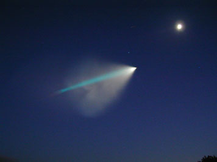
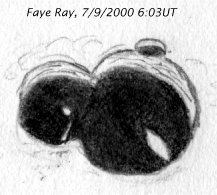
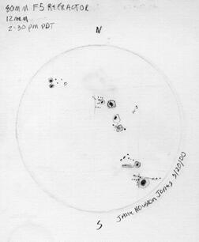

SJAA Ephemeris August 2000 |
SJAA Home |
Contents |
Previous |
Next
SJAA Ephemeris August 2000 |
SJAA Home |
Contents |
Previous |
Next
Tidbits
Minuteman Launch from Vandenburg, July 7, 9:17 p.m.
Many SJAA members observed the launch of the rocket from various locations. Dean Sala, at the Houge Park Star Party took some incredible pictures with his Olympus 2020Z digital camera. The bright spot in the upper right is the first quarter moon.
|

|
Sketch by Akkana Peck of ray-like illumination on the floor of crater Faye. Not a true ray, since they were not directly perpendicular to the terminator. No large angry gorillas were noted.
|

|
Sunspot sketch by Jane Houston Jones, May 20, 2000. Orion "Short Tube" 80mm f/5 refractor.
|

|
Mail to:
Editors
Copyright © 2000 San Jose Astronomical Association
Last updated:
February 05, 2002
Previous | Contents | Next